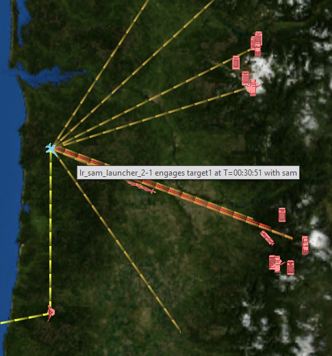

Interactions - Mystic¶
Platforms within AFSIM can interact with each other in many different ways, and to visualize these interactions between platforms, different colored lines are drawn between the platforms on the Map Display. Interaction types include detections, tracks, jamming requests, communications, tasking, and weapon engagements.
Hovering the mouse cursor over an interaction will provide a tooltip about the event that created it.
Jam requests are triggered off of the JAMMING_REQUEST_INITIATED and JAMMING_REQUEST_CANCELED events. These events indicate if a platform is actively attempting to jam a target. It does not indicate an effective jamming interaction. It will not show lines for untargeted or location-based jamming or for incidentally jammed platforms.
Platform Options¶
Interactions are enabled or disabled in the Platform Options dialog.
Preferences¶

The preferences provides options to set the color of each interaction type, and the width of the lines.
Tooltips¶
Controls the amount of information displayed when hovering the mouse over an interaction.
Timeout(sec)¶
Sets the amount of time, in seconds, for which a starred event will be displayed.
Permit Stacking¶
When enabled lines will show for every starred event between a pair of platforms. Otherwise only one line will be displayed at a time.